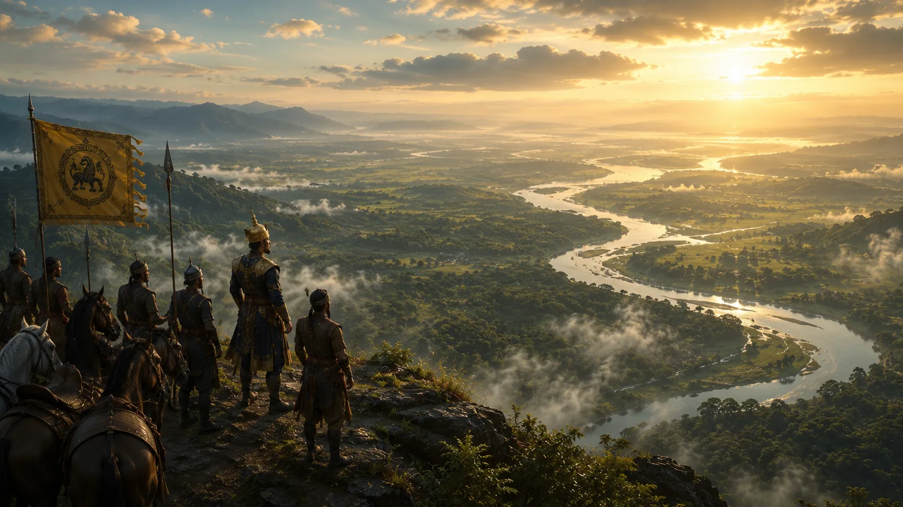

First View of the Brahmaputra Valley
1228 · The coming of Sukaphaa

Sukaphaa and scouts view the immense, fertile Brahmaputra River plain ('Mung Dun Sun Kham' - Country of Golden Gardens), recognizing its potential for wet-rice cultivation.
Sources have not yet been catalogued for this record.
People: Chaolung Sukaphaa
Open this scene in the interactive archive · Follow this event on MAP